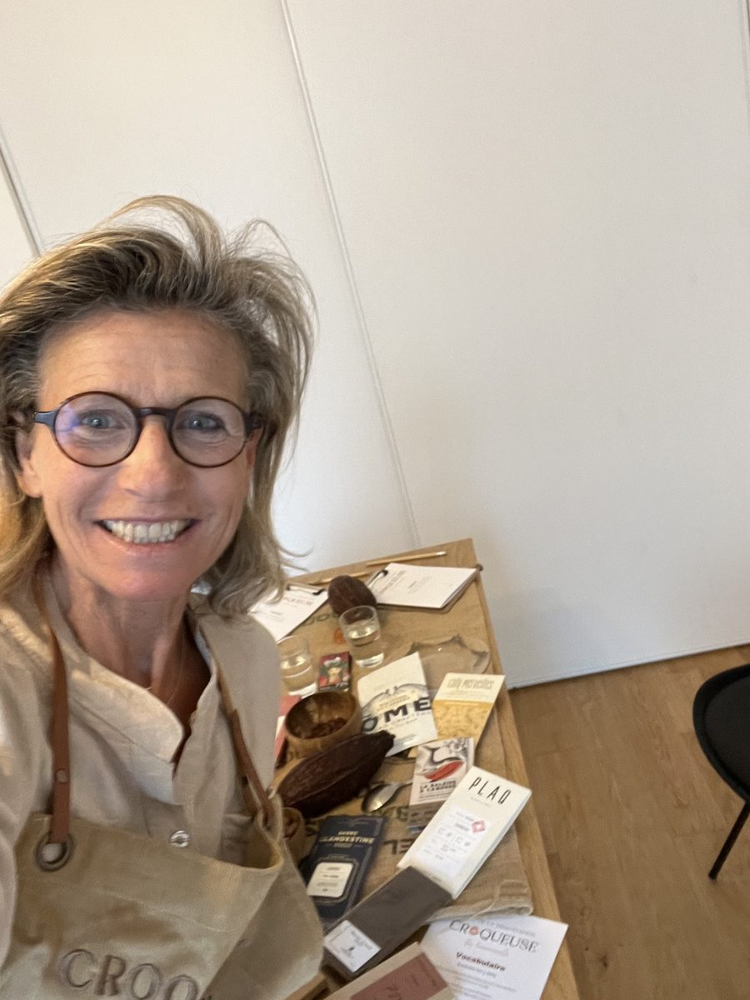

À propos
Comprendre le chocolat pour mieux le déguster. Reconnaître et apprécier un bon chocolat, sa fabrication et son histoire n'auront plus de secret pour vous !

Mon histoire
Tout a commencé par une passion depuis ma plus tendre enfance.
Puis j'ai appris ce que « déguster » veut vraiment dire : prendre le temps, éveiller ses sens et découvrir toute la richesse d'un chocolat, de la fève à la tablette.
Donc, j'ai eu à cœur de faire de ma passion une activité pour offrir de l'émotion !
J'ai dégusté, testé et comparé des centaines de chocolats pour vous proposer ma sélection. Voilà ma valeur ajoutée !
Cette expérience m'a permis de développer une véritable expertise du goût chocolat et, surtout, un regard très précis sur ce qui fait la qualité et la singularité d'un chocolat.
Aujourd'hui, je mets cette expertise au service d'une sélection de chocolat bean-to-bar particulièrement pointue.
Mon rôle : vous faire découvrir ce que j'ai moi-même aimé déguster, et vous guider dans cette exploration du goût !
Repères
Jury
Jury pour la confédération des artisans boulanger.
Présidence
Je préside ce jury dédié aux chocolats travaillés directement à l'origine, dans le pays producteur de cacao.
Aujourd'hui
Ateliers de dégustation, Parcours sensoriel, Cercle Bean to Bar Chocolat, et sélection de tablettes, pour transmettre ce que 25 ans de dégustation m'ont appris.
En résumé